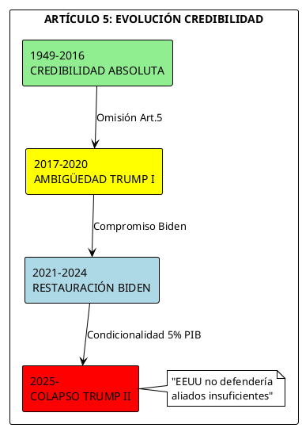
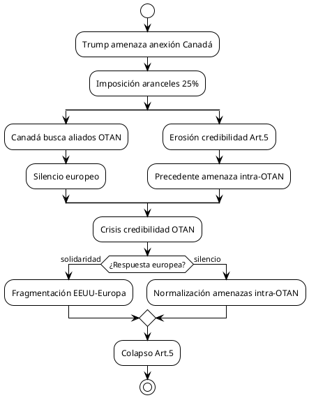
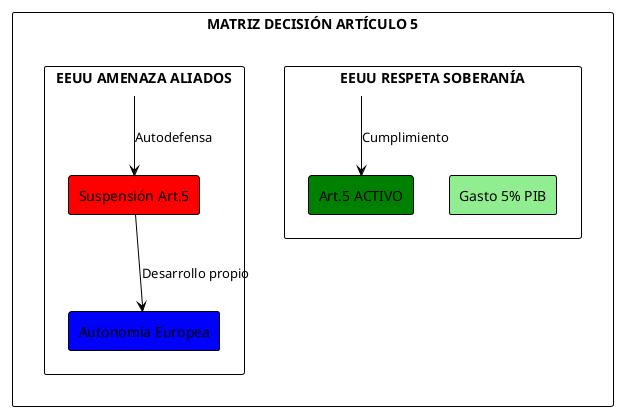
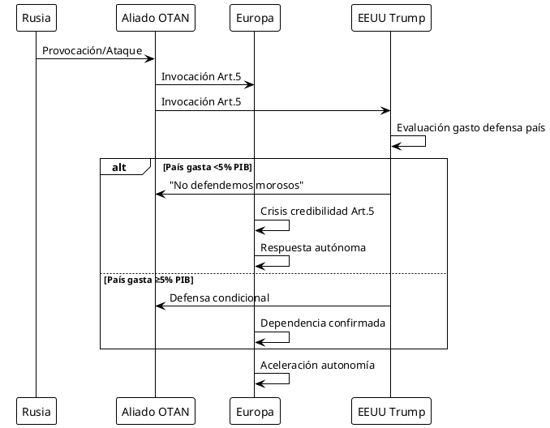

Crisis Art.5 OTAN: Opciones Cumplimiento vs Volatilidad Trump
CRISIS EXISTENCIAL DEL ARTÍCULO 5
Situación Crítica
La credibilidad del Artículo 5 de la OTAN atraviesa su mayor crisis desde 1949. Las demandas del 5% PIB (3.5% + 1.5%), combinadas con la volatilidad extrema de Trump y sus amenazas contra Canadá, han transformado la defensa colectiva de principio sacrosanto en herramienta de chantaje político.
Parámetros de Crisis
| Elemento | Estado Actual | Nivel Crítico | Tendencia |
|---|---|---|---|
| Credibilidad Art.5 | EROSIONADA | EXTREMO | DESCENDENTE |
| Compromiso EEUU | CONDICIONAL | CRÍTICO | VOLÁTIL |
| Cohesión Alianza | FRAGMENTADA | ALTO | DETERIORO |
| Gasto Defensa Europeo | 2.1% PIB PROMEDIO | INSUFICIENTE | ASCENDENTE |
| Amenazas Intra-OTAN | ACTIVAS | CRÍTICO | ESCALATORIO |
CONTEXTO: LA TRANSFORMACIÓN DEL ARTÍCULO 5
Principio Original vs Realidad Actual
Doctrina Fundacional (1949)
"Un ataque armado contra uno o más miembros se considerará ataque contra todos"
- Artículo 5, Tratado Washington 1949
Degradación Trumpiana (2017-2025)
- 2017: Trump es el único presidente estadounidense que no respalda explícitamente Art.5
- 2024: "No defendería a aliados que no gasten suficiente y animaría a Rusia atacarlos"
- 2025: "EEUU no va a defender aliados que no cumplan sus requisitos de gasto"
Diagrama: Evolución Credibilidad Artículo 5

DEMANDAS 5% PIB: IMPOSIBILIDAD ESTRUCTURAL
Desglose 3.5% + 1.5%
Estructura Propuesta
- 3.5% Defensa Tradicional: Personal, equipamiento, operaciones
- 1.5% Capacidades Emergentes: Ciberseguridad, espacio, IA militar
Realidad Fiscal Europea
| País | PIB (Billones $) | Gasto Actual | 5% PIB Reqd. | Incremento Req. |
|---|---|---|---|---|
| Alemania | 4.26 | 2.1% | 213 B $ | +123 B $ |
| Francia | 2.94 | 2.3% | 147 B $ | +79 B $ |
| Reino Unido | 3.13 | 2.3% | 157 B $ | +85 B $ |
| Italia | 2.11 | 1.6% | 106 B $ | +72 B $ |
| España | 1.40 | 1.3% | 70 B $ | +52 B $ |
| TOTAL REQD | - | - | 693 B $ | +411 B $ |
Imposibilidad de Implementación
Mark Rutte advierte sobre "capacidad de absorción": imposible gastar incrementos masivos en un año sin generar inflación y desperdicio.
AMENAZAS TRUMP CONTRA CANADÁ: FRACTURA INTRA-OTAN
Escalada de Amenazas
Cronología 2024-2025
- Dic 2024: "Canadá debería ser estado 51"
- Ene 2025: Aranceles 25% productos canadienses
- Feb 2025: "Usa fuerza económica para anexión"
- Mar 2025: Ultimátum $61B sistema antimisiles
Impacto en Artículo 5
Las amenazas contra Canadá crean precedente devastador: si EEUU amenaza anexar aliado OTAN, ¿qué credibilidad tiene su compromiso de defender otros miembros?
Diagrama: Crisis Canadá-EEUU en OTAN

VOLATILIDAD TRUMP: FACTOR DE DESESTABILIZACIÓN
Patrones de Comportamiento Errático
Inconsistencias Sistemáticas
- 2018: "Probablemente apoyaría Art.5 pero quiere más gasto"
- 2024: "Animaría a Rusia atacar aliados morosos"
- 2025: "EEUU no defendería a aliados insuficientes"
Personalización Extrema de Política Exterior
La política exterior estadounidense depende completamente de caprichos personales Trump, no de intereses nacionales o compromisos institucionales.
El Silencio Europeo Cómplice
Ante amenazas Trump contra Canadá y Groenlandia, "no ha habido condena pública directa por líderes aliados — parece que nos encontramos solos".
OPCIONES DE CUMPLIMIENTO ARTÍCULO 5
Opción 1: Cumplimiento Incondicional (Status Quo Degradado)
Características
- Mantener compromiso Art.5 pese a volatilidad Trump
- Aceptar demandas 5% PIB gradualmente
- Esperanza que Trump modere posiciones
Análisis Crítico
| Aspecto | Evaluación | Probabilidad Éxito |
|---|---|---|
| Viabilidad | BAJA | 15% |
| Costo Fiscal | INSOSTENIBLE | - |
| Credibilidad | NULA | - |
| Dependencia | EXTREMA | - |
Riesgos
- Trump puede abandonar Art.5 unilateralmente
- Europa queda sin capacidades autónomas
- Chantaje permanente sobre gasto
Opción 2: Cumplimiento Condicional (Reciprocidad)
Características
- Art.5 válido solo si EEUU respeta soberanía aliados
- Suspensión automática si amenazas intra-OTAN
- Escalada gradual capacidades europeas
Diagrama PlantUML: Matriz Decisión Condicional

Ventajas
- Protege soberanía europea
- Incentiva comportamiento responsable EEUU
- Desarrolla capacidades alternativas
Desventajas
- Acelera fragmentación transatlántica
- Deja vacío seguridad temporal
- Complejidad implementación
Opción 3: Autonomía Estratégica Europea (Independencia)
Características
- Desarrollo capacidades defensa independientes
- Art.5 limitado a amenazas externas
- Nueva arquitectura seguridad europea
Requisitos Capacidades
| Capacidad Estratégica | Costo (B€) | Plazo | Dependencia EEUU Actual |
|---|---|---|---|
| Disuasión Nuclear | 200-300 | 15a | TOTAL |
| Comando & Control | 50-75 | 8a | CRÍTICA |
| Inteligencia Satélite | 25-40 | 5a | ALTA |
| Logística Estratégica | 100-150 | 10a | ALTA |
| Defensa Antimisiles | 150-200 | 12a | TOTAL |
| TOTAL ESTIMADO | 525-765 | 15a | - |
Ventajas
- Elimina dependencia volátil Trump
- Fortalece soberanía europea
- Credibilidad propia disuasión
Desventajas
- Costo astronómico
- Vacío capacidades transitorio
- Resistencia EEUU
Opción 4: Fragmentación Controlada (Realismo)
Características
- Reconocimiento formal muerte Art.5 tradicional
- Alianzas bilaterales/multilaterales específicas
- Coexistencia OTAN formal + estructuras reales
Arquitectura Propuesta
- OTAN Formal: Burocracia residual sin Art.5 creíble
- Alianza Franco-Británica: Disuasión nuclear europea
- Grupo Visegrado Plus: Defensa Europa Oriental
- Eje Mediterráneo: España-Italia-Francia sur
EVALUACIÓN COMPARATIVA OPCIONES
Matriz Evaluación Multi-Criterio
| Opción | Credibilidad | Viabilidad | Costo | Soberanía | TOTAL |
|---|---|---|---|---|---|
| Cumpl. Incond. | 2/10 | 3/10 | 2/10 | 1/10 | 8/40 |
| Cumpl. Cond. | 6/10 | 6/10 | 5/10 | 7/10 | 24/40 |
| Autonomía Estrat. | 8/10 | 4/10 | 3/10 | 9/10 | 24/40 |
| Fragment. Contr. | 7/10 | 7/10 | 6/10 | 8/10 | 28/40 |
Recomendación Estratégica
FRAGMENTACIÓN CONTROLADA emerge como opción más realista:
- Reconoce muerte Art.5 tradicional
- Desarrolla capacidades alternativas graduales
- Mantiene vínculos útiles con EEUU post-Trump
- Preserva soberanía europea
ESCENARIOS IMPLEMENTACIÓN
Escenario A: "Divorce Amicable" (Probabilidad: 25%)
Desarrollo
- Europa anuncia desarrollo autonomía estratégica gradual
- EEUU acepta reducción rol europeo
- Transición ordenada 2025-2035
- OTAN se transforma en foro consulta
Indicadores
- Reducción tropas estadounidenses Europa
- Inversión europea capacidades estratégicas
- Nuevos acuerdos bilaterales
- Restructuración comando OTAN
Escenario B: "Crisis Catalizadora" (Probabilidad: 40%)
Desarrollo
- Provocación rusa testa Art.5 con Trump presidente
- Respuesta estadounidense ambigua/insuficiente
- Europa forzada desarrollar respuesta autónoma
- Aceleración desacoplamiento transatlántico
Diagrama: Secuencia Crisis Catalizadora

Escenario C: "Colapso Completo" (Probabilidad: 35%)
Desarrollo
- Trump abandona formalmente Art.5
- Europa sin capacidades alternativas desarrolladas
- Ventana vulnerabilidad 2025-2030
- Realineamiento geopolítico radical
Consecuencias
- Rusia prueba resolución europea
- China aprovecha debilidad occidental
- Proliferación nuclear (Alemania, Polonia)
- Nueva Guerra Fría multipolar
RECOMENDACIONES URGENTES
Para Europa (Horizonte 12 meses)
Medidas Inmediatas
- Declaración Soberanía: Art.5 válido solo si EEUU respeta soberanía aliados
- Fondo Emergencia Defensa: €50B para capacidades críticas inmediatas
- Alianza Franco-Británica Plus: Extensión disuasión nuclear a socios
- Comando Europeo Independiente: Estructura C4I autónoma
Hitos Críticos 2025
| Mes | Hito | Responsable |
|---|---|---|
| Jul | Cumbre Emergencia Europea | Consejo Europeo |
| Ago | Creación Fondo Defensa | BCE/Parlamento EU |
| Sep | Comando Europeo Piloto | Francia/Alemania |
| Oct | Declaración Autonomía | 27 EEUU Miembros |
| Nov | Primera Respuesta Autónoma | Comando Europeo |
| Dic | Evaluación Año 1 | Think Tanks |
Para OTAN (Adaptación Institucional)
Reformas Estructurales
- Artículo 5 Bis: Versión europea con garantías mutuas sin EEUU
- Comando Dual: Estructura OTAN + Comando Europeo paralelo
- Financiación Diferenciada: Presupuesto europeo separado
- Mecanismo Suspensión: Art.5 inactivo si amenazas intra-OTAN
CONCLUSIONES: EL FIN DE UNA ERA
Muerte del Artículo 5 Tradicional
El Art.5 como compromiso incondicional de defensa colectiva está muerto. La volatilidad Trump, las demandas imposibles del 5% PIB y las amenazas contra Canadá han demolido 76 años de consenso transatlántico.
Imperativo de Realismo Estratégico
Europa debe abandonar ilusiones sobre fiabilidad estadounidense. Trump ha demostrado que ve aliados como vasallos, no socios. La supervivencia europea requiere autonomía estratégica inmediata.
Ventana de Oportunidad Histórica
Paradójicamente, la destrucción Trump del orden tradicional abre oportunidad única para Europa de desarrollar capacidades estratégicas propias y liberarse de dependencia tóxica.
"El Art.5 sobrevivió a la Guerra Fría, pero no pudo sobrevivir a Trump. La pregunta ya no es si Europa desarrollará autonomía estratégica, sino si lo hará antes de que sea demasiado tarde."
Realidad Geopolítica 2025
- EEUU: Socio no fiable, volátil, amenaza intra-OTAN
- Rusia: Oportunista, esperando debilidad occidental
- China: Beneficiaria fragmentación transatlántica
- Europa: En transición hacia autonomía forzada
La credibilidad del Art.5 no está "sujeta" al lunático Trump: ha sido destruida por él. Europa debe actuar en consecuencia.
REFERENCIAS DOCUMENTALES
Tratados y Documentos Oficiales
- Tratado Washington 1949, Artículo 5
- Declaraciones Trump Truth Social 2024-2025
- Discursos Mark Rutte, Secretario General OTAN 2025
- Comunicados Oficiales Consejo Atlántico Norte
Fuentes Analíticas Primarias
- Reuters: "Trump seen likely to support NATO's Article 5 but wants more spending"
- NBC News: "Donald Trump's silence on NATO's Article 5 is a big deal"
- CBC News: "Trump's NATO comments should be taken seriously"
- The Conversation: "Trump's threats against Canada put NATO in tough spot"
Estudios Estratégicos
- Brookings Institution: "Trump's NATO Article 5 problem" (2022)
- Chatham House: "NATO summit spending promises" (2025)
- CEPA: "Why NATO's Article 5 Is So Misunderstood" (2024)
- Foreign Policy: "Trump's Article 5 Omission Attack Against NATO" (2017)
Datos Económicos y Militares
- SIPRI Database: Gasto militar por país 2024-2025
- NATO: Defence Expenditure Statistics 2025
- IISS Military Balance 2025
- Stockholm Peace Research Institute: Arms Transfer Database
—